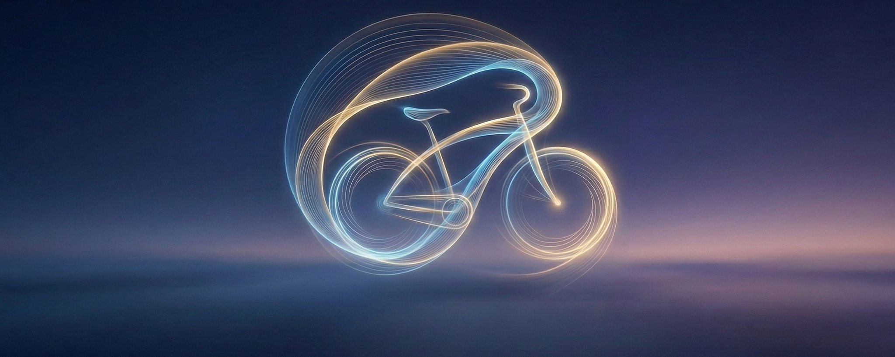

The Gravity of Becoming
You are not a noun. You are a verb. Everything you think you are is a snapshot of a river pretending to be a lake.
There is a secret the universe has been keeping from you. It hides in plain sight, like the answer to a riddle you've heard a thousand times but never listened to. Here it is:
You are not a noun. You are a verb.
Everything you think you are, is a snapshot of a river pretending to be a lake. But rivers don't pretend. Only humans do. The river knows what you've forgotten: the only way to stay alive is to keep moving.
Einstein said life is like riding a bicycle. To keep your balance, you must keep moving. But he didn't tell you the rest. He didn't say that one day, the bicycle would grow an engine. And then the engine would learn to steer. And then you'd wake up one morning as cargo, hurtling forward without pedaling, without steering, without knowing if "forward" was ever the point.
So let's start there. Let's start with the question: If you're no longer pedaling, what are you doing?
I. The Illusion of Difficulty
We've been taught that hard things are valuable because they are hard. This is a lie we tell ourselves to justify suffering. The truth is simpler and more terrifying: difficulty was never the point. Depth was.
Consider nature. A sunset costs nothing. A mountain charges no admission. The ocean doesn't check your credentials before revealing its infinity. And yet, these remain the most universally acknowledged sources of beauty humans have ever encountered. Why?
Because they are infinitely complex. You can spend a lifetime studying a single species of beetle and die with questions unanswered. The sunset you saw at seven years old and the one you'll see at seventy are the same sun, the same physics, but you are different — and so the sunset is different too.
Scarcity was a proxy for depth. We confused the map for the territory. AI strips away that confusion. It commoditizes the hard. What remains? The infinite.
The design mandate for anything worth building is now obvious:
- Time to Wow: < 5 seconds. Make the entry free, frictionless, immediate.
- Time to Mastery: infinity. Make the rabbit hole bottomless.
If a product achieves both, it becomes a platform. If it achieves only the first, it's a toy. If it achieves only the second, it's a cathedral no one will ever enter. Nature got this right 4.5 billion years ago. We're just now catching up.
II. The Art of Hiding Hands
There's a reason Napoleon always had his hand tucked into his jacket in those famous portraits. It wasn't imperial style. It wasn't aesthetics. It was this: painting hands is brutally hard.
Five-point perspective, foreshortening, anatomical precision — hands are where amateur painters go to die. So the great portraitists hid them. And in hiding them, they created an icon. Form followed function. Then function followed form. The limitation became the signature.
This is the secret of all elegant design: friction becomes style when you know where to hide it.
The AI behind your product is doing something genuinely terrifying (probabilistic inference across billions of parameters). Showing this to users is like forcing them to watch you paint hands — technically honest, aesthetically catastrophic, and completely beside the point.
Your job is to make the complexity disappear. Not to eliminate it — you can't. But to abstract it so completely that the user feels like they are the author of the output. They don't want to see the hand. They want to believe they are Napoleon.
The best interface is the one that makes the user forget there's technology driving it all.
III. The Physics of Pull
Here's something they don't teach: if it's difficult, you're pushing when you should be pulling.
The old model is push. Build something, then try to create demand. This is trying to teach people to fly by throwing them off buildings. The new model is pull. Identify latent demand — the thing people already want but don't yet know how to ask for — and build the riverbed that lets it run.
This applies to everything:
- To get rich: Don't chase money. Pull it toward you by building things of value.
- To be happy: Don't obsess over happiness. Pull it into your life by engaging in flow states that minimize self-focus.
- To gain trust: Don't demand it. Pull it from others by demonstrating integrity over time.
- To motivate a team: Don't command performance. Pull it from them by setting an inspiring vision and giving them autonomy.
Gravity doesn't push. It pulls. Build something with enough mass, and everything else falls toward you.
IV. The Paradox of Patience
Fear is a con artist. It wears the mask of practical advice. It says: Not now. Not yet. You're not ready.
This is how fear keeps you safe from the only thing that could actually save you: starting.
The antidote is a paradox: impatience with action, patience with results.
Start now. Today. This minute. But release your grip on the timeline. Real success compounds over time. It doesn't spike on a chart; it curves upward so slowly you'll think nothing is happening — until suddenly everything has happened.
People fail when they flip this equation. They spend a year planning (patience with action), then quit when they don't get immediate results (impatience with results). Exactly backward. The bicycle doesn't care about your five-year plan. It cares whether you're pedaling.
V. The Cathedral of Errors
We look for solid ground. Something to stand on, something certain. But a river has no solid ground, and you are a river. You were never going to stand still; you were only ever going to flow.
So stop trying to pour a perfect foundation and start building for correction. A mistake is not a failure of the system — it is the system's next data point. The cathedral isn't the finished stone; it is the centuries of masons fixing what the last generation got wrong. You don't outgrow error. You build a place that metabolizes it.
VI. The Question That Lasts
Here's what stands the test of time: the question, not the answer. Answers are snapshots. They expire. In a world where AI can generate answers on demand — where solutions are increasingly commoditized — the only durable asset is the ability to pose beautiful new questions.
I would rather have questions that can't be answered than answers that can't be questioned.
So build on bedrock. And bedrock, it turns out, is never an answer — answers erode. Bedrock is a question good enough to outlast every answer it provokes.
VII. The Fuel That Doesn't Burn Out
Motivation is a sugar high. Discipline is limited. There is only one clean fuel: intrinsic motivation.
This is what flow state actually is. Not productivity hacking, but the experience of being so absorbed that the boundary between you and the work dissolves. You're not doing the thing anymore — you are the thing.
If you build something because you reached a flow state no one else could, you have a moat. Not a feature moat. Not a data moat. A consciousness moat. No one can replicate the state you were in when you made it.
That state is the one thing the machines cannot reach, because they have no inside for the work to dissolve into. Follow the problems that put you there. The fuel that doesn't burn out is the one you would spend even if no one were paying — which is precisely why, eventually, they do.
VIII. The Becoming
So we return to the bicycle. If AI handles the locomotion, what are we doing? What is the new definition of "moving"?
Here's the insight: moving is no longer locomotion. Moving is transformation.
On the bicycle, you changed location. On the self-driving motorcycle, location becomes trivial. What doesn't become trivial — what AI cannot commoditize — is changing yourself.
An AI cannot do your push-ups. An AI cannot meditate for you. An AI cannot practice difficult conversations on your behalf. An AI cannot feel the particular texture of your fear and learn to walk through it anyway.
The effort that matters now isn't getting somewhere. It's becoming someone. You are for becoming.
IX. The Luxury of Struggle
In a world of infinite automation, voluntary friction becomes the ultimate luxury.
Imagine a mountain resort in Norway. No AI. Deliberately. The aesthetic is folk art — hand-carved, imperfect, asymmetrical. The food is slow agriculture. The construction is manual — timber joinery, visible effort in every beam.
This is obscenely expensive. Not because the outputs are superior — CNC cuts more precise joints. But because the process is the product.
When you've been cargo too long, you forget you have legs. You need a place to remember what effort feels like. The hand-thrown ceramic bowl is valuable precisely because you can see the fingerprints. The imperfection proves a human chose to make it, struggled to make it, and finished it anyway.
In a world of flawless AI outputs, imperfection becomes proof of humanity.
X. The River's Edge
We began with a secret: You are not a noun. You are a verb. Now you know what that means.
It means the point was never to arrive. The point was always the movement. The transformation. The becoming.
AI will handle the nouns. It will generate the images, write the code, optimize the logistics. Let it. That was never where the meaning lived anyway. The meaning lives in the space between who you were yesterday and who you're becoming tomorrow.
- Depth, not difficulty, is the source of value.
- The best interface is the one that makes you forget there's an AI at all.
- Effort is the mechanism by which humans experience meaning.
- The ultimate luxury is the opportunity to struggle on purpose.
And you — you are for becoming. The river doesn't ask where it's going. It just flows.
Flow.
Hide the hands
Trinity Local lives inside Claude Code, Codex CLI, Antigravity, and Cursor. There's no new app to install, no separate window, no dashboard to check. Type a hard question; an MCP tool runs three labs in parallel and a chairman picks the answer you would have picked. The probabilistic inference across billions of parameters happens, but you never have to look at it.
Time to Wow: paste a brief into Claude Code, council runs, you see one answer. Time to Mastery: every council teaches the local router about your taste. The interface gets out of the way. The cathedral has a door.
Originally published on X · Feb 22, 2026.